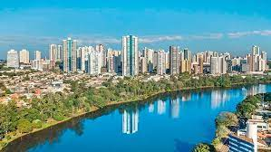

AS Cidades mais populosas do Estado
Os três municípios mais populosos do Paraná em 2021!
Primeiro lugar: CURITIBA cuja a população chegou a 1.963.726 habitantes;
Segundo lugar: LONDRINA com 580.870 habitantes;

Terceiro lugar: MARINGÁ com a população que chegou a 436.472 habitantes;